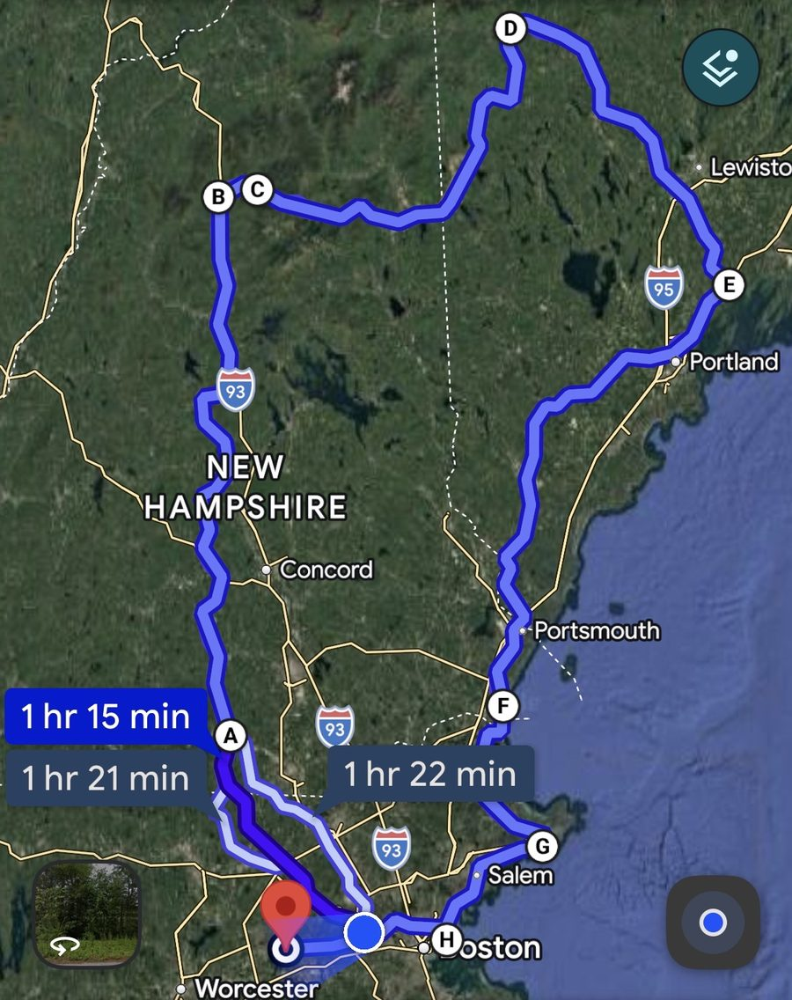
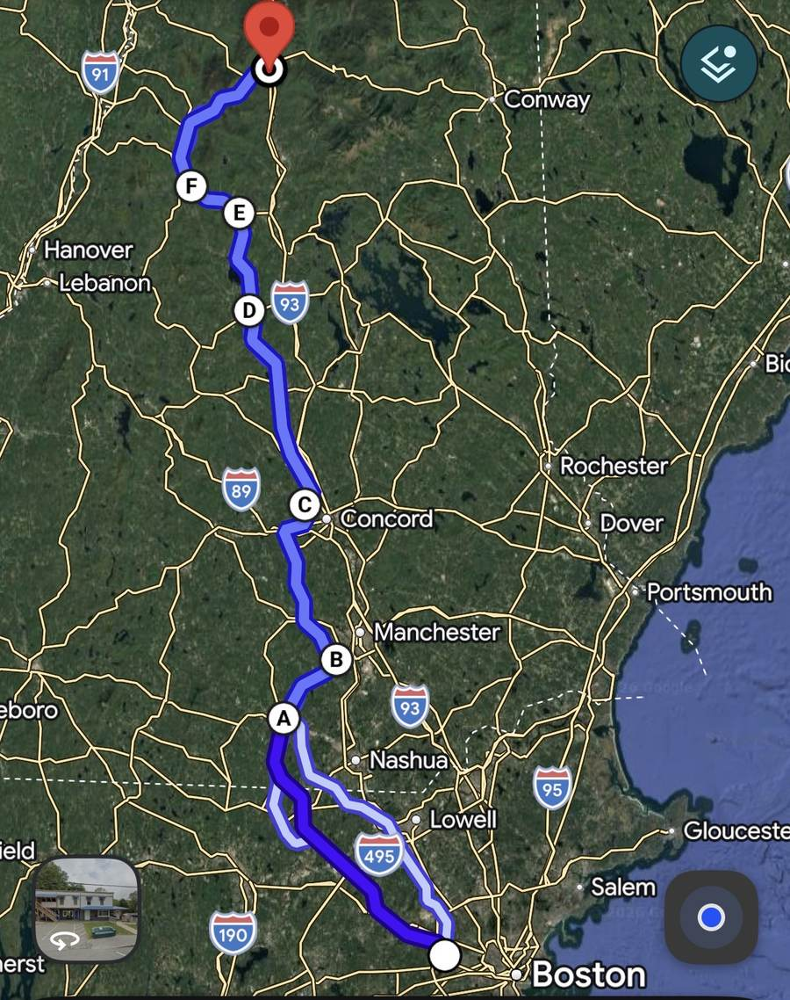
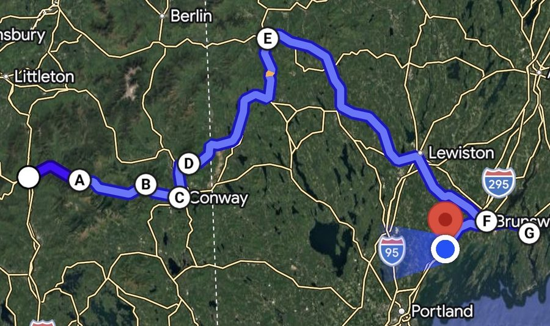
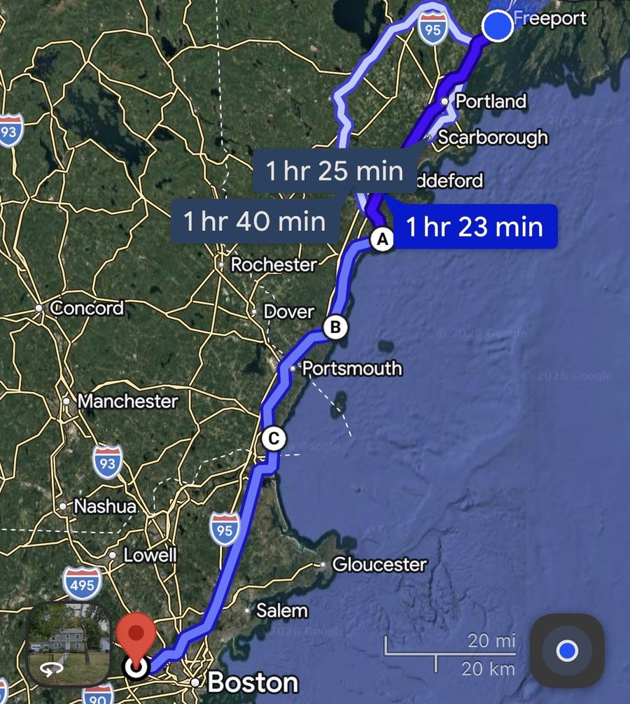

Motorcycle Trip DossierBitácora del Viaje en Moto
Waltham → White Mountains → Maine Coast → back homeWaltham → White Mountains → la Costa de Maine → de vuelta a casa
A three-day, ~533-mile loop from Waltham up through the White Mountains, along the Maine coast to Freeport, and back down the seacoast. The Kancamagus and Hurricane Mountain Rd carried Day 2 to the coast; Day 3 turned into a full coastal crawl — Bass Beach in Rye, Hammond Castle in Gloucester, lunch in Winthrop, a stop at Deer Island, and a final ride out to the grist mill in Sudbury. Full day-by-day breakdown below.Un recorrido de tres días y ~533 millas desde Waltham, subiendo por las White Mountains, a lo largo de la costa de Maine hasta Freeport, y de vuelta por la costa. El Kancamagus y Hurricane Mountain Rd llevaron el Día 2 hasta la costa; el Día 3 se convirtió en un recorrido costero completo — Bass Beach en Rye, el castillo Hammond en Gloucester, almuerzo en Winthrop, una parada en Deer Island, y un último tramo hasta el molino de Sudbury. El desglose completo día por día está más abajo.
Full weekend, one linkTodo el fin de semana, un solo enlace
Covers all three days end to end. Use the day-by-day links below for turn-by-turn navigation.Cubre los tres días de principio a fin. Usa los enlaces de cada día más abajo para la navegación paso a paso.

🗺️ Open Full Weekend Route in Google Maps ↗🗺️ Abrir la ruta completa en Google Maps ↗Friday · Sept 4 · Depart 8–9amviernes · 4 sept · salida 8–9am
12 Lincoln St, Waltham → Milford, NH → Bedford, NH → Penacook Lake → Bristol, NH → Rt 25 / Rt 118 → Lincoln, NH (Inn 32)
Route mapMapa de la ruta

Leg breakdownDesglose de tramos
Stops along the wayParadas en el camino
Logistics to keep in mindDetalles a tener en cuenta
Photos from the roadFotos del camino
Saturday · Sept 5 · Depart 8–9amsábado · 5 sept · salida 8–9am
Lincoln, NH → Kancamagus Hwy (Pemigewasset Overlook, Lower Falls) → Conway, NH → Hurricane Mountain Rd → Bethel, ME → Rt 26 → Brunswick, ME → Doubling Point Lighthouse → Freeport, ME
Route mapMapa de la ruta

Leg breakdownDesglose de tramos
Stops along the wayParadas en el camino
Logistics to keep in mindDetalles a tener en cuenta
Photos from the roadFotos del camino
Sunday · Sept 6 · Depart 8amdomingo · 6 sept · salida 8am
Freeport, ME → Rt 1 via Fortunes Rocks & Goose Rocks Beach → Kennebunkport, ME → Rt 1A via Rye (Bass Beach) → Hampton, NH → Hammond Castle, Gloucester, MA → Salem, Lynn & Revere Beach → Winthrop, MA → Waltham, MA → Grist Mill Pond, SudburyFreeport, ME → Rt 1 por Fortunes Rocks y Goose Rocks Beach → Kennebunkport, ME → Rt 1A por Rye (Bass Beach) → Hampton, NH → Hammond Castle, Gloucester, MA → Salem, Lynn y Revere Beach → Winthrop, MA → Waltham, MA → Grist Mill Pond, Sudbury
Route mapMapa de la ruta

Leg breakdownDesglose de tramos
Stops along the wayParadas en el camino
Logistics to keep in mindDetalles a tener en cuenta
Photos from the roadFotos del camino
Every photo from the trip, in one place. Tap any thumbnail to see it full screen.Todas las fotos del viaje, en un solo lugar. Toca cualquier miniatura para verla en pantalla completa.
Day 1 — Friday, Sept 4Día 1 — viernes, 4 de sept
John's House, Waltham, MA
The Riverhouse Cafe, Milford, NH
Mobil, Bedford, NH
Penacook Lake, Concord, NH
Bristol, NH
Inn 32, North Woodstock, NH
Day 2 — Saturday, Sept 5Día 2 — sábado, 5 de sept
Pemigewasset Overlook, Kancamagus Hwy, NH
Lower Falls, Kancamagus Hwy, NH
Doubling Point Lighthouse, Arrowsic, ME
Day 3 — Sunday, Sept 6Día 3 — domingo, 6 de sept
Bass Beach, Rye, NH
Hammond Castle Museum, Gloucester, MA
La Esquina Del Sabor, Winthrop, MA
Deer Island, Winthrop, MA
Grist Mill Pond, Sudbury, MA